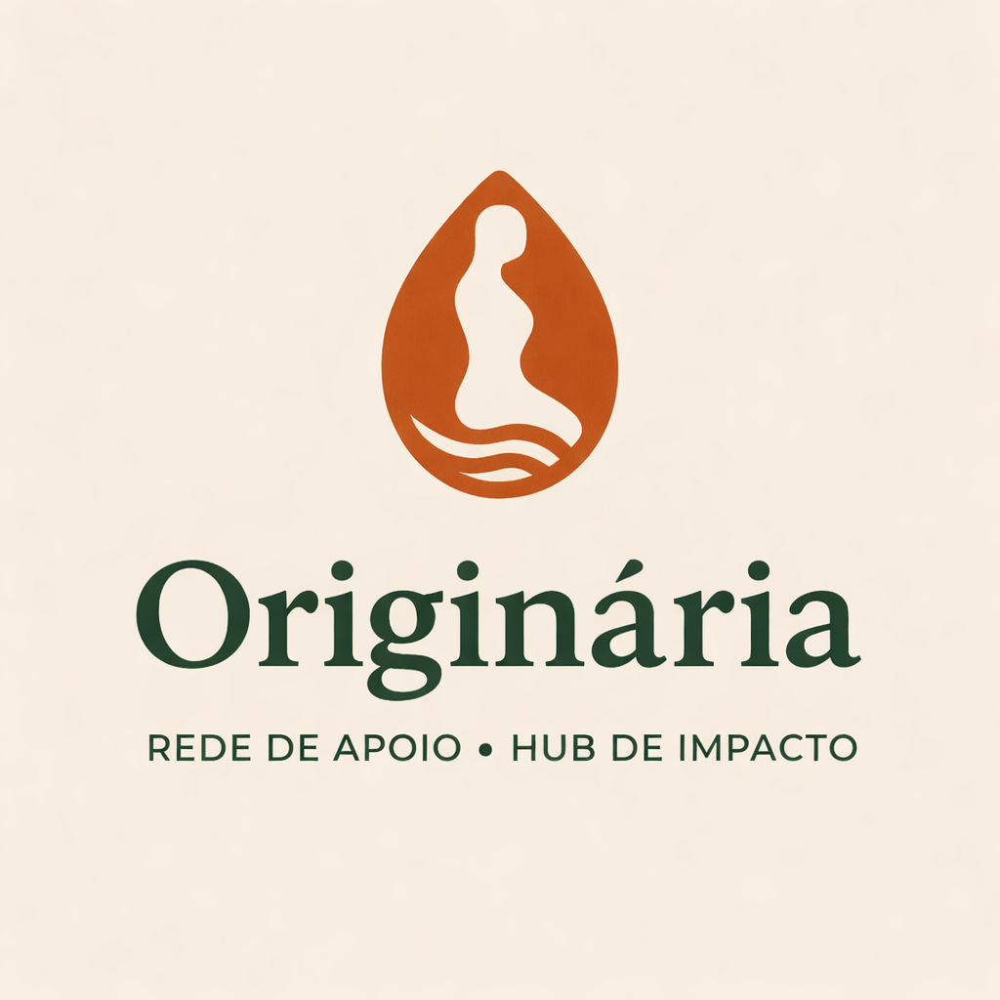

A social responsibility platform
Originária
Originária is not about where something began, but about what continues to give life. It is the source that never runs dry, like water feeding a river from start to end. The Earth is originária because all life comes from it. A mother is originária because the act of bringing life into the world is timeless. Originária speaks of what is always present, quietly sustaining life, creation, and meaning.
Aussie Coffee’s social responsibility platform—supporting grassroots social, environmental, and cultural projects in Brazil.
Originária is Aussie Coffee’s social responsibility platform—a not-for-profit social innovation initiative that identifies and strengthens grassroots social, environmental, and cultural projects in Brazil.
It operates as a practical incubator and think tank, providing free consulting and long-term support when promising ideas lack the structure, capital, and operational stability to move forward.
At its core, Originária is about creating opportunity: offering young Brazilians a practical entry point into business, governance, and execution, while contributing meaningfully to the communities in which they live and work.Impact over scale